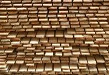

M. Cerca Ramos, Lda.
O trabalho
da madeira,
desde o início.
1983
O ano em que a empresa iniciou a sua atividade no trabalho da madeira e dos seus derivados.
Cerca Woodtech
Técnica que
se desenvolve.
A apresentação da M. Cerca Ramos assenta no aperfeiçoamento das técnicas de trabalho e no rigor da gestão, do planeamento e da execução.
A gama Woodtech publicada inclui pavimentos de madeira maciça para interior e exterior, modelos e opções de fixação.
Conhecer os materiais
Contactos
O seu projeto
começa aqui.
Indique se procura madeira para interior ou exterior e as características do espaço. A equipa poderá enquadrar os materiais e os detalhes necessários.
Esta demonstração não recolhe dados nem envia pedidos.
M. Cerca Ramos, Lda.
Fornelo,
Vila do Conde.
Rua do Cruzeiro, 54
4485-129 Fornelo · Portugal
Chamada para a rede fixa nacional